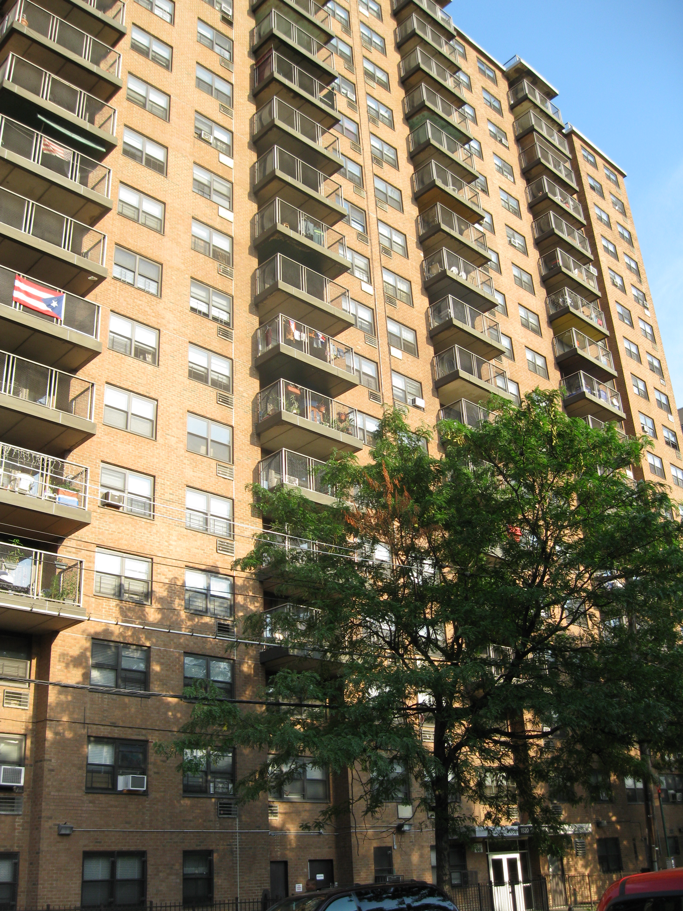
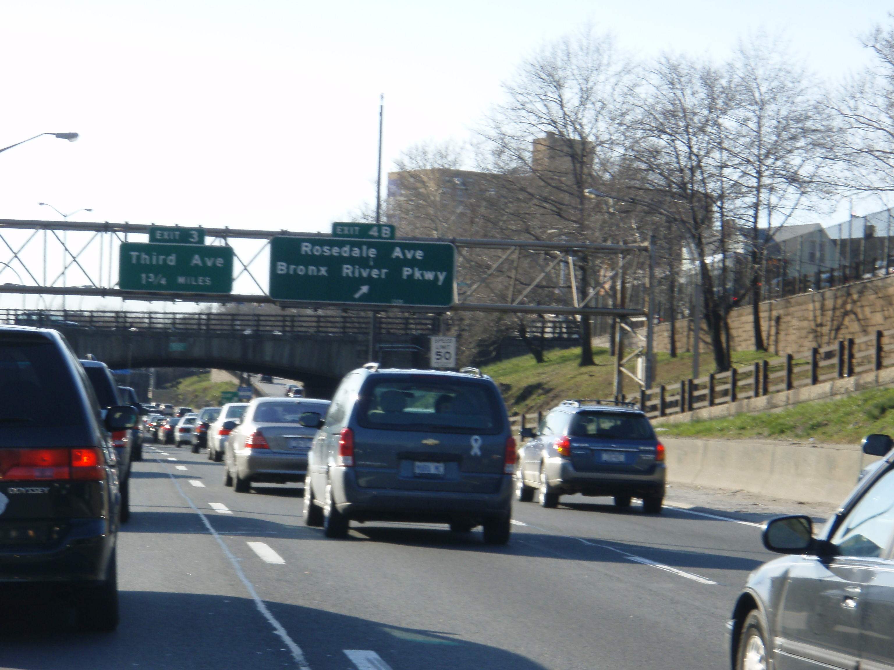
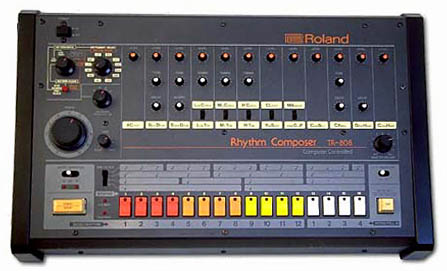
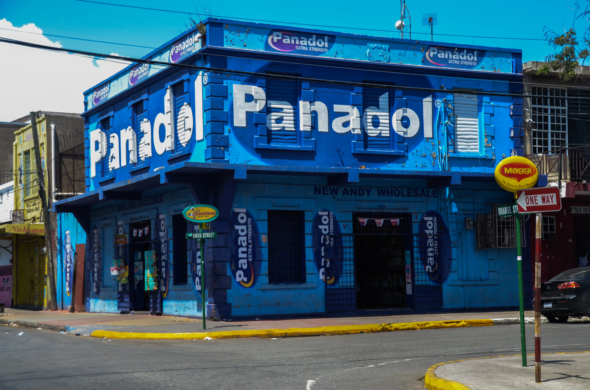
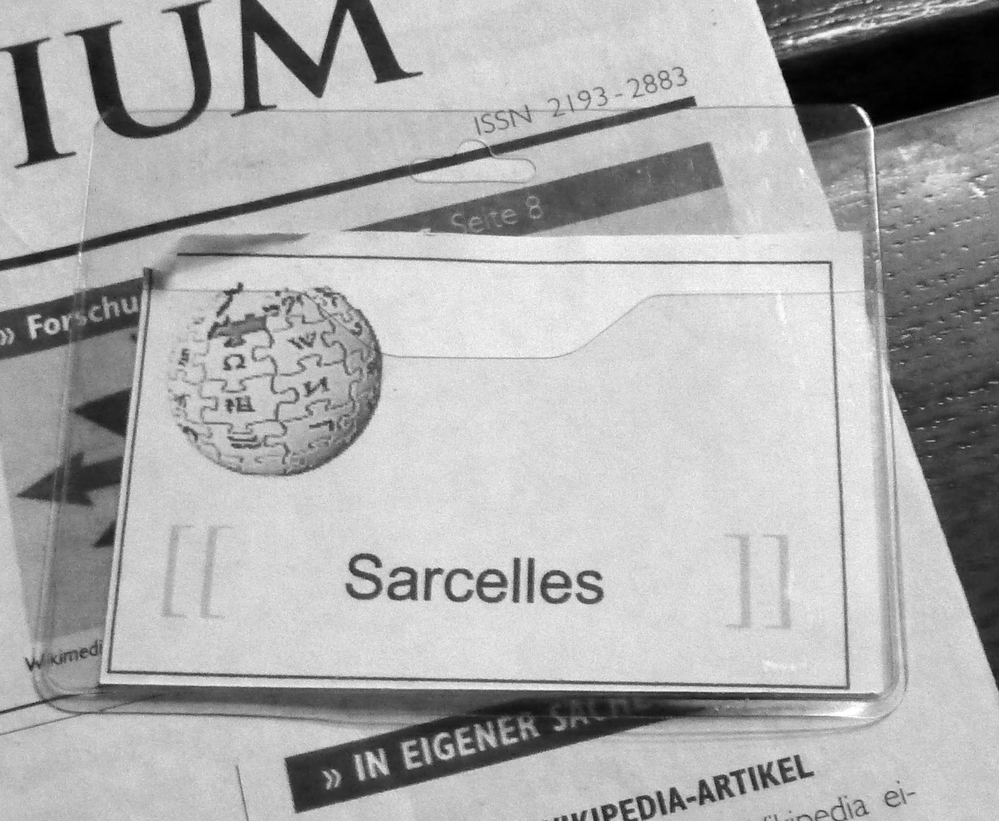

Tuesday · Music
origins (c. 1973–1986): Bronx block parties, breakbeats, and the first records
In August 1973 extended breaks on two turntables in a Bronx rec room. For six years the form belonged to parks and community centres. In 1979 a studio group put a party on a , played it, and the majors arrived. By 1986 and had built a commercial blueprint. This lesson covers the Bronx scene, Jamaica's lineage, the first records, and what happened before renamed it rap.

{kind=link}
Early photographs from 1973–1979 are rare; many Bronx party and park pictures from the era are in private or unclear-copyright hands. Most artist publicity photographs from the late 1970s and early 1980s are still under commercial copyright. This lesson uses street and building photographs from the Bronx, Jamaica, Paris, and other cities, plus equipment and venue images, all captioned as what they are: places and objects, not portraits. Where a free-license portrait could not be verified, the lesson does without. All YouTube links point to official or Topic uploads; when official audio is unavailable the note explains what the link is. No AI images of people. No invented facts, quotes, or numbers.
Select any words, or tap a dotted term.
- Before 1973 Bronx fires, Jamaican sound systems, disco breaks The in the late 1960s and early 1970s: urban renewal, highway construction, disinvestment, and fires leave whole blocks empty. emigrates from Kingston, Jamaica, in 1967, bringing knowledge of culture and (spoken vocals over instrumental tracks). In discos and at parties, dancers respond most strongly to the instrumental breaks in funk, soul, and Latin records — the sections where drums and bass are isolated. DJs notice.
- 11 Aug 1973 Cindy Campbell's party, 1520 Sedgwick Avenue organises a back-to-school fundraiser party in the rec room of , Morris Heights. Her brother , using the name , plays two copies of the same record on two turntables, switching between them to loop the break — the percussive, vocal-free section dancers want. He calls the dancers break-boys and break-girls. , a friend, takes the microphone and speaks rhythmically over the music. The method spreads.
- 1974–1978 Parks, rec centres, and the scene vocabulary The technique moves into Bronx parks — , PS 63 schoolyard, Webster Avenue PAL — and other rec rooms. , (who founds the in 1973), and refine the art. develops and to make breaks seamless. MCs (masters of ceremonies) — , , , — develop spoken routines over the beats. () becomes a parallel practice. Graffiti writers and breakers share crews. No records yet; this is a live, local culture.
- 1979 The first commercial rap record On 16 September 1979 — , , and , assembled by — release "" on . The 15-minute uses a live band replaying 's "" and studio rappers, not the established Bronx MCs. It reaches number 36 on the and sells millions. Many Bronx pioneers resent the record for packaging a park culture into a commercial product without crediting them, but "" proves rap can be pressed and sold.
- 1980–1982 More records, more labels, and "The Message" releases "" (Mercury, 1980), the first rap single on a major label and the first certified gold rap record. sign to . In 1982 they release "," written largely by and , a social-commentary track about poverty and urban decay. The same year and release "" (), fusing the drum machine with 's "" to create . These records move from breakbeats into synthesised production.
- 1983–1986 Def Jam, Run-DMC, and the crossover and found in 1984. — (), (), and () — release their debut album in 1984 and in 1986. "," a collaboration with , brings rap to rock and . signs and the . By 1986 the independent Bronx party has become a commercial format on major labels. This lesson stops here; the and gangsta-rap eras belong to later capsules.
Before
The Bronx after the fires, Jamaica's sound systems, and the breaks dancers wanted
The in the late 1960s and early 1970s was a borough under pressure. 's , completed in stages from 1948 to 1972, had cut through dense residential neighbourhoods. Urban renewal and highway construction displaced thousands of families. White flight, redlining, and landlord arson — burning buildings to collect insurance — left blocks of rubble. By 1973 the was a national image of urban collapse. The people who stayed needed cheap recreation. Block parties, park jams, and rec-room gatherings filled the gap.
was born in Kingston, Jamaica, in 1955 and emigrated with his family to the Bronx in 1967. In Kingston he had witnessed culture: mobile discos with enormous speaker stacks, DJs who selected records, and toasters who spoke or chanted over instrumental B-sides. — rhythmic speech over music — was already an established Jamaican form by the time Campbell left. Artists like , , and were recording toasted tracks for producers like and . Campbell carried that knowledge to New York, where disco DJs were playing Motown, funk, and soul for dancers who wanted the beat.
Dancers responded most strongly to the break: the moment in a funk or soul record when the vocals dropped out and the drums, bass, and percussion were isolated. James Brown's "Give It Up or Turnit a Loose," the Incredible Bongo Band's "Apache," and Babe Ruth's "The Mexican" had breaks that made people move. DJs noticed that when the break played, the floor filled. But breaks lasted only seconds. The question was how to make them last longer. worked out the answer in his family's apartment in the Bronx, using two copies of the same record, two turntables, and a mixer.
The hinge
11 August 1973: Cindy Campbell's party and the breakbeat loop
On 11 August 1973 , 's sister, organised a back-to-school party in the rec room of , Morris Heights, the Bronx. She needed money for new clothes; she charged admission. Clive, who had started calling himself , brought his — two Shure columns and a pair of Thorens or Technics turntables — and played records. The method he used that night was the one he had been developing at home: he played two copies of the same record on two turntables, cueing one to the start of the break while the other played, then switching at the last second to loop the break indefinitely. He called the technique the . He called the dancers who responded break-boys and break-girls.
, a friend of 's, took the microphone and began speaking over the music: shouting out the names of people in the room, hyping the crowd, punctuating the beat with phrases. This was not singing. It was rhythmic speech, closer to Jamaican than to American patter. The combination of the extended break and the spoken-word hype created a new format: the music was a loop, the was the architect, and the was the voice on top. This is the party that historians and practitioners most often cite as 's foundation.
The event was not unique. Other DJs in the Bronx — Grandmaster Flowers, Pete Jones — were also playing for dancers and extending breaks, though their techniques varied. What made the Sedgwick party important was that 's method worked and spread. He began playing at other venues: the on Jerome Avenue, the on 183rd Street, and in Sedgwick. Word travelled. Other DJs copied the technique. By 1974 had a crew: and on the mics, and a loud enough to fill parks. This was still a live culture. No one was recording yet.
The scene
Parks, rec centres, crews, and the vocabulary that stuck
Between 1974 and 1978 the party moved from rec rooms into parks and schoolyards. played (University Avenue and ), the Webster PAL (Police Athletic League), and the Hevalo. , a former member of the Black Spades street gang, founded the in 1973 as a community organisation and began DJing at the . — , born in Barbados, raised in the Bronx — refined the technical side. He developed (moving between records without losing the beat) and (spinning the record backward to reset the break instantly). 's was quieter than 's but more precise. By the late 1970s , , and were recognised as the Bronx's three pioneers, each with a separate following.
The microphone work evolved from shouting names into structured routines. The term "" (master of ceremonies) stuck; "" came later. and worked with . (), (Keith Wiggins), (Eddie Morris), (Guy Williams), and (Nathaniel Glover) joined as . and performed at multiple venues. The MCs traded boasts, announced the , and kept the crowd engaged. This was not yet singing or verse-chorus structure. It was call-and-response over an endless loop.
and graffiti ran parallel. Break-boys and break-girls developed acrobatic floor moves during : spins, freezes, and footwork. Graffiti writers tagged subway cars and walls, creating a visual vocabulary for the same youth culture. Crews formed around all three practices — DJing, MCing, and . The , founded by Jimmy D and Jojo in 1977, became the most recognised crew. The whole cluster — DJs, MCs, breakers, and writers — shared venues, parties, and a name. By the late 1970s the Bronx press and the early practitioners themselves were calling it , a term some credit to or Keith , though the origin is disputed.

{kind=link}
The first records
1979: "Rapper's Delight" and the studio version of a park party
For six years existed as a live event. The Bronx DJs and MCs did not record because the equipment was expensive, the music was made from other people's records ( was not yet legally settled), and no label saw a market. changed that. Robinson was a singer and producer who had recorded "Love Is Strange" with Mickey & Sylvia in 1956 and "Pillow Talk" as a solo artist in 1973. In 1979 she co-founded with her husband and decided to record a rap single. She assembled a studio group — (Henry Jackson), (Michael Wright), and (Guy O'Brien) — who had little connection to the established Bronx scene. They rapped over a live band's replay of 's "." The track ran 15 minutes and was pressed as a single.
"" was released on 16 September 1979. It reached number 36 on the and sold millions of copies internationally. It introduced rap to programmers and record buyers who had never heard of or . Many Bronx pioneers resented the record. had borrowed lines from () of the without credit. The live-band approach erased the . The three rappers were studio hires, not battle-tested MCs. The record packaged and commercialised a culture that had been local, collective, and unrecorded. But "" proved rap could be sold. Labels followed.
() released "" on Mercury in 1980, the first rap single on a major label and the first certified gold rap record. Mercury's distribution gave the record national reach. Blow performed on , proving rap could work on television. The same year signed to and began recording with . In October 1981 released "," a seven-minute live-mixed turntable track that demonstrated , , and backspin on record. This was closer to what a Bronx actually did than "" had been.
1982
"The Message" and "Planet Rock": social commentary and synthesisers
On 1 July 1982 released "" on . The track was written mostly by Ed "" Fletcher and ; and the other members of did not perform on it. The lyrics described poverty, crime, and urban decay: "Broken glass everywhere / People pissing on the stairs, you know they just don't care." This was not party music. It was social commentary. "" reached number 62 on the Hot 100 and became one of the most-cited rap records of all time. It showed that rap could carry narrative and politics, not just boasts and rhythm.
Five months earlier, in March 1982, and (Mr. Biggs, Pow Wow, and G.L.O.B.E.) had released "" on . and producer used the drum machine and sampled 's "" and "Numbers," layering electronic synth lines over a rigid kick. The result was : mechanical, synthetic, futuristic. "" became a dance-floor standard and influenced the development of techno and Miami bass. It marked the moment when stopped being only about breakbeats from funk records and started building its own electronic sound.
By 1982 had three commercial directions: party rap (, ), social commentary (), and electronic production (). These were not yet genres. They were early records that showed rap could do more than one thing. The Bronx scene continued in parks and clubs, but the centre of gravity was shifting toward record deals, play, and .

{kind=link}
1984–1986
Def Jam, Run-DMC, and the major-label crossover
managed and ; was a white New York University student who produced records in his dorm room. In 1984 they founded and distributed through . The label's aesthetic was harder and sparser than 's: no live bands, no disco polish, just drum machines, samples, and aggressive vocals. () was 16 when he sent Rubin a demo tape; his debut album (1985) became 's first gold record. The , a white punk-turned-rap group, signed to and released in 1986, the first rap album to reach number one on the .
— (), (), and () — were 's flagship group. Their self-titled debut in 1984 and in 1985 used minimal production: drum machines, scratch samples, and hard vocal delivery. In 1986 they released on . The album included "," a collaboration with that merged rap with rock guitar. The music video, directed by Jon Small, showed and through a wall to perform together. played it in heavy rotation. The single reached number four on the Hot 100. The album sold three million copies. "" opened rock to rap and brought rap to white suburban audiences who had ignored .
By 1986 was no longer a Bronx secret. It had labels, distribution, presence, and major-label deals. performed at . The toured with Madonna. was generating millions of dollars. The independent party had invented in 1973 had become a commercial format. This is where this lesson stops. The (1987–1992), , West Coast production, and the East Coast–West Coast split belong to later capsules. The foundation — the , the , the , the , and the first commercial blueprint — was laid in the Bronx between 1973 and 1986.
Elsewhere
Jamaica's toasting lineage and contemporaneous scenes in Paris, London, and Sydney
did not invent rhythmic speech over music. That form came from Jamaica. In Kingston in the 1960s and 1970s, DJs like , , , and spoke and chanted over instrumental reggae and dub tracks. This was called . The practice had roots in Jamaican DJs like in the 1950s. Producers like () and () pressed toasted tracks onto B-sides and, later, as full singles. By the early 1970s was a commercial reggae subgenre. When emigrated from Kingston to the Bronx in 1967, he brought that knowledge. The loop was his innovation; the spoken vocal was a Jamaican inheritance.

.jpg){kind=link}
In Paris arrived in the early 1980s through and imports. 's H.I.P. H.O.P. show on 7 (later ) played New York records starting in 1980. French youth began , DJing, and rapping in French. () released the first French rap record, "," in 1984. By the mid-1980s groups like () and were forming. The Paris (suburbs) became centres for French , with social conditions—housing projects, unemployment, racial segregation—that paralleled the . French was contemporaneous with the Bronx's commercial phase, not derivative: it used the same tools (turntables, drum machines, microphones) to address local conditions.

{kind=link}
In London and intersected with culture in Afro-Caribbean communities. 's "" (1982) brought and to British pop. , a compilation series launched in 1983, introduced British audiences to New York . appeared in British cities in 1983–1984. By the mid-1980s British MCs were rapping over reggae and beats; this evolved into , , and in later decades. The early moment—1982–1986—was one of import and imitation, with British youth adapting New York forms to British accents and infrastructure.
In Sydney and graffiti arrived in 1983–1984 through films like (1983) and (1984) and through TV broadcasts. Australian youth formed crews and crews in the western suburbs of Sydney. , an Australian group, formed in 1983 and released early tracks in the mid-1980s. The scene was small and scattered, but it existed. The point is not that Sydney invented . The point is that the form—two turntables, a microphone, a , and a voice—could be copied and adapted anywhere young people had access to records, , and film. By 1986 was a transnational format.
After
MTV, major labels, and the next commercial chapters
In 1988 launched , hosted by () in New York and and () in Los Angeles. The show brought rap videos into American living rooms daily and made a mass-market format. 's (, 1988), 's (Ruthless, 1988), and 's (, 1989) represent the late-1980s explosion. By the early 1990s rap outsold rock in some American markets.
The (roughly 1987–1993)—, , , the collective—emphasised lyrical complexity and jazz-sample production. —, , later and —emphasised street narratives and West Coast . Both strands outgrew the 1973–1986 foundation this lesson covers. By the mid-1990s was the subject of Congressional hearings, moral panic, and billion-dollar major-label catalogues. The Bronx party had become an industry.
What remains from 1973–1986 is the blueprint: two turntables and a mixer (), the as architect (), the as voice (, , ), the as drum section (), and the commercial structure (, ). Later producers, MCs, and labels built on that blueprint, but they did not invent it. The invention happened in the Bronx, in rec rooms and parks, between 1973 and 1979, before anyone pressed a record. The next music capsules can take the , the West Coast, or trap. This one stops when left the park and entered the industry.
A question
A question to keep asking
If began as a local, unrecorded party culture in the Bronx, and became a billion-dollar global industry within 20 years, what parts of the original practice survived the commercial transition, and what parts were left behind in the parks?
Fun fact
1520 Sedgwick Avenue was designated a New York City landmark in 2023, fifty years after the party
On 9 May 2023 the New York City Landmarks Preservation Commission designated as an individual landmark, marking its role in the birth of . The rec room where held the August 1973 party no longer exists in its original form — the building has been renovated several times — but the address remains a pilgrimage site. In 2007 it was recognised by the New York State Office of Parks, Recreation and Historic Preservation as the birthplace of . The designation protects the building's exterior from demolition or significant alteration. () attended the 2023 ceremony.